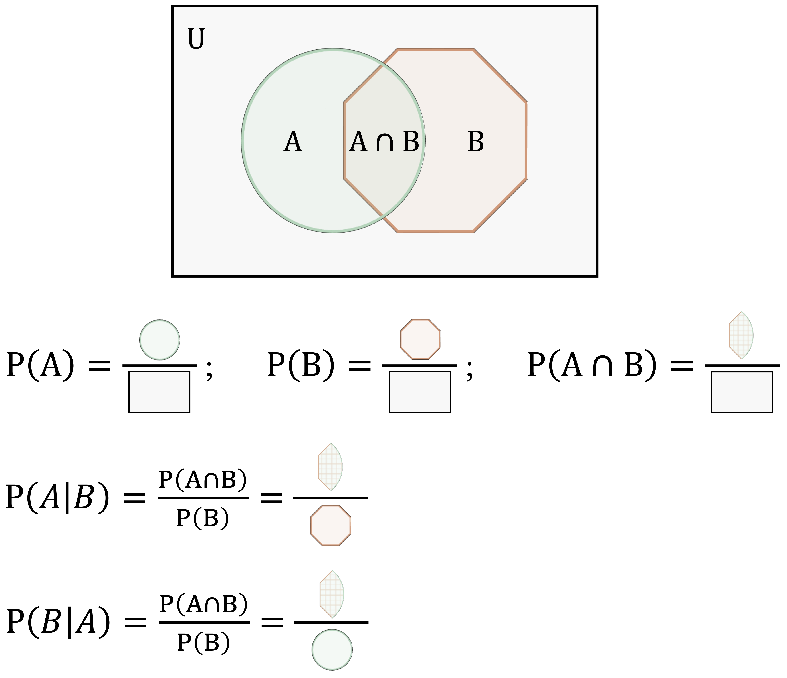
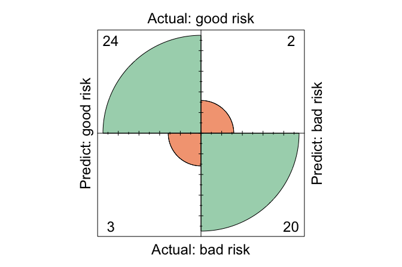
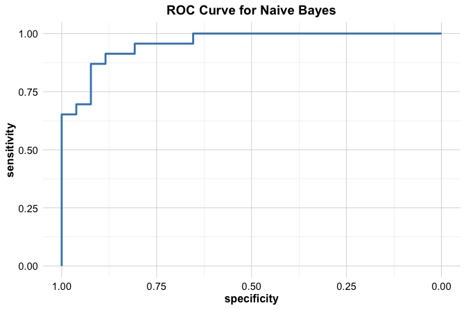

9 Naive Bayes Classifier
The measure of belief is the measure of action.
How can we make fast and reasonably accurate predictions while keeping computation simple? Consider a bank that must decide, in real time, whether to approve a loan based on a customer’s income, age, and mortgage status. Decisions of this kind must be made quickly and consistently. The Naive Bayes classifier offers a simple probabilistic approach for such settings, using estimated class probabilities to support classification decisions.
In Chapter 7, we introduced k-Nearest Neighbors (kNN), an instance-based method that classifies observations by similarity in feature space. In Chapter 8, we examined how to evaluate classifiers using confusion matrices, ROC curves, and related performance measures. In this chapter, we turn to Naive Bayes, a probabilistic classifier grounded in Bayes’ theorem. Unlike kNN, which predicts by comparing new observations to stored training cases, Naive Bayes learns class-conditional probability distributions from the data and returns explicit probability estimates. These probability outputs connect naturally to threshold-based decision-making and to the evaluation tools introduced earlier.
Naive Bayes relies on a strong simplifying assumption: features are conditionally independent given the class label. Although this assumption rarely holds exactly, it makes the model computationally efficient and often competitive in practice, particularly in high-dimensional applications such as text classification. The same efficiency makes Naive Bayes attractive in time-sensitive tasks such as spam filtering and financial risk scoring.
However, Naive Bayes also has limitations. Strong correlations among predictors can reduce performance, and continuous variables require an additional distributional assumption (often Gaussian) that may not accurately reflect the data. For problems involving complex feature interactions, more flexible models such as decision trees or ensemble methods may achieve higher predictive accuracy.
Despite these trade-offs, Naive Bayes remains a useful baseline and a practical first model in many domains. Its probabilistic outputs are interpretable, its training is fast, and its implementation is straightforward, qualities that make it valuable both for early model development and for comparison with more complex classifiers.
What This Chapter Covers
This chapter introduces the Naive Bayes classifier as a probabilistic approach to classification that combines conceptual simplicity with practical effectiveness, particularly in high-dimensional and sparse settings. The chapter balances theoretical foundations with applied examples, emphasizing both interpretation and implementation.
We begin by revisiting the probabilistic foundations of Naive Bayes, with particular emphasis on Bayes’ theorem and its role in classification. We then show how class probabilities can be estimated from training data through worked examples, before introducing the main variants of Naive Bayes (Gaussian, Multinomial, and Bernoulli) and discussing the types of predictors for which each is appropriate. Along the way, we examine the conditional independence assumption that makes the method computationally efficient, and we discuss the practical strengths and limitations that follow from this simplification. The chapter concludes with an end-to-end implementation and evaluation of a Naive Bayes classifier in R using the risk dataset from the liver package.
By the end of this chapter, readers will be able to explain how Naive Bayes operates, select an appropriate variant for a given problem, and apply the method effectively within a standard modeling workflow. We begin by revisiting the core principle underlying this classifier: Bayes’ theorem.
9.1 Bayes’ Theorem and Probabilistic Foundations
The Naive Bayes classifier derives its power from Bayesian probability, specifically from Bayes’ theorem, introduced by the 18th-century statistician Thomas Bayes (Bayes 1958). Bayes’ theorem provides a principled framework for updating beliefs in light of new evidence by combining prior knowledge with observed data. This idea lies at the heart of many modern approaches to statistical learning and machine learning.
How should we revise our beliefs when new information becomes available? Whether assessing financial risk, diagnosing medical conditions, or filtering spam, many real-world decisions must be made under uncertainty. Bayes’ theorem formalizes this process by describing how an initial belief about an event can be systematically updated as new evidence is observed. For example, when evaluating whether a loan applicant poses a financial risk, an institution may begin with general expectations based on population-level data and then refine that assessment after observing additional attributes such as mortgage status or outstanding debts.
This perspective forms the basis of Bayesian inference, in which probability is interpreted not only as long-run frequency but as a measure of belief that can evolve with new data. Thomas Bayes’ contribution marked a shift toward this dynamic view of probability, allowing uncertainty to be modeled and updated in a coherent and mathematically consistent way.
The conceptual roots of Bayesian reasoning emerged from earlier work on probability in the 17th century, motivated by problems in gambling, trade, and risk assessment. These early developments laid the foundation for modern probabilistic modeling. Bayes’ theorem unified these ideas into a general rule for learning from data, a principle that directly underpins the Naive Bayes classifier introduced in this chapter.
The Essence of Bayes’ Theorem
Bayes’ Theorem provides a systematic way to update probabilistic beliefs as new evidence becomes available and forms the theoretical foundation of Bayesian inference. It addresses a central question in probabilistic reasoning: Given what is already known, how should our belief in a hypothesis change when new data are observed?
The theorem is mathematically expressed as:
\[\begin{equation} \label{eq-bayes-theorem} P(A|B) = \frac{P(A \cap B)}{P(B)}, \end{equation}\]
where:
\(P(A|B)\) is the posterior probability, the probability of event \(A\) (the hypothesis) given that event \(B\) (the evidence) has occurred;
\(P(A \cap B)\) is the joint probability that both events \(A\) and \(B\) occur;
\(P(B)\) is the marginal probability (or evidence), representing the total probability of observing event \(B\).
To clarify these components, Figure 9.1 provides a visual interpretation using a Venn diagram. The overlapping region represents the joint probability \(P(A \cap B)\), while the entire area of the octagon corresponding to event \(B\) represents the marginal probability \(P(B)\). The ratio of these two areas illustrates how the conditional probability \(P(A|B)\) is obtained.
The expression for Bayes’ Theorem can also be derived by applying the definition of conditional probability. Specifically, \(P(A \cap B)\) can be written as \(P(A) \times P(B|A)\), leading to an alternative form:
\[\begin{equation} \label{eq-bayes-theorem-2} P(A|B) = \frac{P(A \cap B)}{P(B)} = P(A) \times \frac{P(B|A)}{P(B)}. \end{equation}\]
These equivalent expressions result from two ways of expressing the joint probability \(P(A \cap B)\). This formulation highlights how a prior belief \(P(A)\) is updated using the likelihood \(P(B|A)\) and normalized by the marginal probability \(P(B)\).
Bayes’ Theorem thus provides a principled way to refine beliefs by incorporating new evidence. This principle underpins many probabilistic learning techniques, including the Naive Bayes classifier introduced in this chapter.
Let us now apply Bayes’ Theorem to a practical example: estimating the probability that a customer has a good risk profile (\(A\)) given that they have a mortgage (\(B\)), using the risk dataset from the liver package.
We begin by loading the dataset and inspecting the relevant data:
library(liver)
data(risk)
xtabs(~ risk + mortgage, data = risk)
mortgage
risk yes no
good risk 81 42
bad risk 94 29To improve readability, we add row and column totals to the contingency table:
addmargins(xtabs(~ risk + mortgage, data = risk))
mortgage
risk yes no Sum
good risk 81 42 123
bad risk 94 29 123
Sum 175 71 246Now, we define the relevant events: \(A\) is the event that a customer has a good risk profile, and \(B\) is the event that the customer has a mortgage (mortgage = yes). The prior probability of a customer having good risk is:
\[ P(A) = \frac{\text{Total Good Risk Cases}}{\text{Total Cases}} = \frac{123}{246} = 0.5 \]
Using Bayes’ Theorem, we compute the probability of a customer being classified as good risk given that they have a mortgage:
\[\begin{equation} \label{eq1} \begin{split} P(\text{Good Risk} | \text{Mortgage = Yes}) & = \frac{P(\text{Good Risk} \cap \text{Mortgage = Yes})}{P(\text{Mortgage = Yes})} \\ & = \frac{\text{Good Risk with Mortgage Cases}}{\text{Total Mortgage Cases}} \\ & = \frac{81}{175} \\ & = 0.463 \end{split} \end{equation}\]
This result indicates that among customers with mortgages, the observed proportion of those with a good risk profile is lower than in the general population. Such insights help financial institutions refine credit risk models by incorporating new evidence systematically.
Practice: Using the same contingency table, compute the probability that a customer has a good risk profile given that they do not have a mortgage. How does this probability compare to the value obtained for customers with a mortgage? Hint: Identify the relevant counts in the table and apply Bayes’ theorem. You may verify your result using R.
How Does Bayes’ Theorem Work?
Imagine you are deciding whether to approve a loan application. You begin with a general expectation, perhaps most applicants with steady income and low debt are low risk. But what happens when you learn that the applicant has missed several past payments? Your belief shifts. This type of evidence-based reasoning is precisely what Bayes’ Theorem formalizes.
Bayes’ Theorem provides a structured method to refine our understanding of uncertainty as new information becomes available. In everyday decisions, whether assessing financial risk or evaluating the results of a medical test, we often begin with an initial belief and revise it in light of new evidence.
Bayesian reasoning plays a central role in many practical applications. In financial risk assessment, banks typically begin with prior expectations about borrower profiles, and then revise the risk estimate after considering additional information such as income, credit history, or mortgage status. In medical diagnostics, physicians assess the baseline probability of a condition and then update that estimate based on test results, incorporating both prevalence and diagnostic accuracy. In spam detection, email filters estimate the probability that a message is spam using features such as keywords, sender information, and formatting, and continually refine those estimates as new messages are processed.
Can you think of a situation where you made a decision based on initial expectations, but changed your mind after receiving new information? That shift in belief is the intuition behind Bayesian updating. Bayes’ Theorem turns this intuition into a formal rule. It offers a principled mechanism for learning from data, one that underpins many modern tools for prediction and classification.
From Bayes’ Theorem to Naive Bayes
Bayes’ Theorem provides a mathematical foundation for updating probabilities as new evidence emerges. However, directly applying Bayes’ Theorem to problems involving many features becomes impractical, as it requires estimating a large number of joint probabilities from data, many of which may be sparse or unavailable.
The Naive Bayes classifier addresses this challenge by introducing a simplifying assumption: it treats all features as conditionally independent given the class label. While this assumption rarely holds exactly in real-world datasets, it dramatically simplifies the required probability calculations.
Despite its simplicity, Naive Bayes often delivers competitive results. For example, in financial risk prediction, a bank may evaluate a customer’s creditworthiness using multiple variables such as income, loan history, and mortgage status. Although these variables are often correlated, the independence assumption enables the classifier to estimate probabilities efficiently by breaking the joint distribution into simpler, individual terms.
This efficiency is particularly advantageous in domains like text classification, spam detection, and sentiment analysis, where the number of features can be very large and independence is a reasonable approximation.
Why does such a seemingly unrealistic assumption often work so well in practice? As we will see, this simplicity allows Naive Bayes to serve as a fast, interpretable, and surprisingly effective classifier, even in complex real-world settings.
9.2 Why Is It Called “Naive”?
When assessing a borrower’s financial risk using features such as income, mortgage status, and number of loans, it is reasonable to expect dependencies among them. For example, individuals with higher income may be more likely to have multiple loans or stable mortgage histories. However, Naive Bayes assumes that all features are conditionally independent given the class label (e.g., “good risk” or “bad risk”).
This simplifying assumption is what gives the algorithm its name. While features in real-world data are often correlated, such as income and age, assuming independence significantly simplifies probability calculations, making the method both efficient and scalable.
To illustrate this, consider the risk dataset from the liver package:
str(risk)
'data.frame': 246 obs. of 6 variables:
$ age : int 34 37 29 33 39 28 28 25 41 26 ...
$ marital : Factor w/ 3 levels "single","married",..: 3 3 3 3 3 3 3 3 3 3 ...
$ income : num 28061 28009 27615 27287 26954 ...
$ mortgage: Factor w/ 2 levels "yes","no": 1 2 2 1 1 2 2 2 2 2 ...
$ nr_loans: int 3 2 2 2 2 2 3 2 2 2 ...
$ risk : Factor w/ 2 levels "good risk","bad risk": 2 2 2 2 2 2 2 2 2 2 ...This dataset includes financial indicators such as age, income, marital status, mortgage, and number of loans. Naive Bayes assumes that, given a person’s risk classification, these features do not influence one another. Mathematically, the probability of a customer being in the good risk category given their attributes is expressed as:
\[ P(Y = y_1 | X_1, \dots, X_5) = \frac{P(Y = y_1) \times P(X_1, \dots, X_5 | Y = y_1)}{P(X_1, \dots, X_5)}. \]
Mathematically, computing the full joint likelihood of all features given a class label is challenging. Directly computing \(P(X_1, X_2, \dots, X_5 | Y = y_1)\) is computationally expensive, especially as the number of features grows. In datasets with hundreds or thousands of features, storing and calculating joint probabilities for all possible feature combinations becomes impractical.
The naive assumption of conditional independence simplifies this problem by expressing the joint probability as the product of individual probabilities:
\[ P(X_1, \dots, X_5 | Y = y_1) = P(X_1 | Y = y_1) \times \dots \times P(X_5 | Y = y_1). \]
This transformation eliminates the need to compute complex joint probabilities, making the algorithm scalable even for high-dimensional data. Instead of handling an exponential number of feature combinations, Naive Bayes only requires computing simple conditional probabilities for each feature given the class label.
In practice, the independence assumption is rarely true, as features often exhibit some degree of correlation. Nevertheless, Naive Bayes remains widely used in domains where feature dependencies are sufficiently weak to preserve classification accuracy, where interpretability and computational efficiency are prioritized over capturing complex relationships, and where minor violations of the independence assumption do not substantially degrade predictive performance.
For example, in credit risk prediction, while income and mortgage status are likely correlated, treating them as independent still allows Naive Bayes to classify borrowers effectively. Similarly, in spam detection or text classification, where features (such as word occurrences) are often close to independent, the algorithm delivers fast and accurate predictions.
By reducing complex joint probability estimation to simpler conditional calculations, Naive Bayes offers a scalable solution. In the next section, we address a key practical issue: how to handle zero-probability problems when certain feature values are absent in the training data.
9.3 The Laplace Smoothing Technique
One challenge in Naive Bayes classification is handling feature values that appear in the test data but are missing from the training data for a given class. For example, suppose no borrowers labeled as “bad risk” are married in the training data. If a married borrower later appears in the test set, Naive Bayes would assign a probability of zero to \(P(\text{bad risk} | \text{married})\). Because the algorithm multiplies probabilities when making predictions, this single zero would eliminate the bad risk class from consideration, leading to a biased or incorrect prediction.
This issue arises because Naive Bayes estimates conditional probabilities directly from frequency counts in the training set. If a category is absent for a class, its conditional probability becomes zero. To address this, Laplace smoothing (or add-one smoothing) is used. Named after Pierre-Simon Laplace, the technique assigns a small non-zero probability to every possible feature-class combination, even if some combinations do not appear in the data.
To illustrate, consider the marital variable in the risk dataset. Suppose no customers labeled as bad risk are married. We can simulate this scenario:
risk
marital good risk bad risk
single 21 11
married 51 0
other 8 10Without smoothing, the conditional probability becomes:
\[ P(\text{bad risk} | \text{married}) = \frac{\text{count}(\text{bad risk} \cap \text{married})}{\text{count}(\text{married})} = \frac{0}{\text{count}(\text{married})} = 0. \]
This would cause every married borrower to be classified as good risk, regardless of other features.
Laplace smoothing resolves this by adjusting the count of each category. A small constant \(k\) (typically \(k = 1\)) is added to each count, yielding: \[ P(\text{bad risk} | \text{married}) = \frac{\text{count}(\text{bad risk} \cap \text{married}) + k}{\text{count}(\text{married}) + k \times \text{number of marital categories}}. \]
This adjustment ensures that every possible feature-category pair has a non-zero probability, even if unobserved in the training set.
In R, you can apply Laplace smoothing using the laplace argument in the naivebayes package. By default, no smoothing is applied (laplace = 0). To apply smoothing, simply set laplace = 1:
library(naivebayes)
formula_nb = risk ~ age + income + marital + mortgage + nr_loans
model <- naive_bayes(formula = formula_nb, data = risk, laplace = 1)This adjustment improves model robustness, especially when working with limited or imbalanced data. Curious to see how the naivebayes package performs in practice? In the case study later in this chapter, we will walk through how to train and evaluate a Naive Bayes model using the risk dataset, complete with R code, predicted probabilities, and performance metrics.
Laplace smoothing is a simple yet effective fix for the zero-probability problem in Naive Bayes. While \(k = 1\) is a common default, the value can be tuned based on domain knowledge. By ensuring that all probabilities remain well-defined, Laplace smoothing makes Naive Bayes more reliable for real-world prediction tasks.
9.4 Types of Naive Bayes Classifiers
What if your dataset includes text, binary flags, and numeric values? Can a single Naive Bayes model accommodate them all? Not exactly. Different types of features require different probabilistic assumptions, this is where distinct variants of the Naive Bayes classifier come into play. The choice of variant depends on the structure and distribution of the predictors in your data.
Each of the three most common types of Naive Bayes classifiers is suited to a specific kind of feature:
Multinomial Naive Bayes is designed for categorical or count-based features, such as word frequencies in text data. It models the probability of counts using a multinomial distribution. In the
riskdataset, themaritalvariable, with levels such assingle,married, andother, is an example where this variant is appropriate.Bernoulli Naive Bayes is intended for binary features that capture the presence or absence of a characteristic. This approach is common in spam filtering, where features often indicate whether a particular word is present. In the
riskdataset, the binarymortgagevariable (yesorno) fits this model.Gaussian Naive Bayes is used for continuous features that are assumed to follow a normal distribution. It models feature likelihoods using Gaussian densities and is well suited for variables like
ageandincomein theriskdataset.
Selecting the appropriate variant based on your feature types ensures that the underlying probability assumptions remain valid and that the model produces reliable predictions.
The names Bernoulli and Gaussian refer to foundational distributions introduced by two prominent mathematicians: Jacob Bernoulli, known for early work in probability theory, and Carl Friedrich Gauss, associated with the normal distribution. Their contributions form the statistical backbone of different Naive Bayes variants.
In the next section, we apply Naive Bayes to the risk dataset and explore how these variants operate in practice.
9.5 Case Study: Predicting Financial Risk with Naive Bayes
How can a bank determine whether a loan applicant is likely to repay a loan or default before making a lending decision? This question lies at the core of financial risk assessment, where each approval involves balancing potential profit against the risk of loss. Accurate predictions of creditworthiness support responsible lending, regulatory compliance, and effective risk management.
In this case study, we apply the Data Science Workflow introduced in Chapter 2 (Figure 2.3), moving systematically from problem formulation and data understanding to model training, evaluation, and interpretation. Using the risk dataset from the liver package in R, we build a Naive Bayes classifier to predict whether a customer should be classified as good risk or bad risk. By following the workflow step by step, this example illustrates how probabilistic classification models can inform credit decisions and support structured, data-driven risk assessment.
9.5.1 Problem Understanding
How can financial institutions assess whether a loan applicant is likely to repay a loan or default before extending credit? This question lies at the core of financial risk assessment, where institutions must balance profitability with caution. Demographic and financial indicators are routinely used to estimate default risk and to support informed lending decisions.
This case study builds on earlier chapters. In Chapter 7, we introduced classification using instance-based methods, and in Chapter 8, we examined how to assess classification performance. We now extend these foundations by applying a probabilistic classification approach, Naive Bayes, which estimates the likelihood of each risk category rather than producing only hard class labels.
The analysis focuses on identifying which demographic and financial characteristics are associated with customer risk profiles and on determining how applicants can be classified as good risk or bad risk prior to a lending decision. By producing probability-based predictions, the model can support more effective and transparent lending strategies, allowing decision thresholds to be adjusted in line with institutional priorities and risk tolerance.
Using the risk dataset, our objective is to develop a model that classifies customers according to their likelihood of default. The resulting probability estimates can inform data-driven credit scoring, support responsible lending practices, and help reduce non-performing loans.
9.5.2 Data Understanding
Before training the Naive Bayes classifier, we briefly examine the dataset to understand the role of each variable and to verify that the data are suitable for modeling. At this stage, the focus is not on extensive exploratory analysis, but on confirming the structure, variable types, and basic data quality. As introduced earlier in Section 9.2, the risk dataset from the liver package contains financial and demographic information used to assess whether a customer should be classified as good risk or bad risk. The dataset includes 246 observations and 6 variables, comprising both predictors and a binary outcome. The variables used in this analysis are:
age: customer age in years;marital: marital status (single,married,other);income: annual income;mortgage: mortgage status (yes,no);nr_loans: number of loans held by the customer;risk: target variable indicating whether the customer is classified as good risk or bad risk.
To obtain a concise overview of the data and to check for missing values or obvious anomalies, we examine the summary statistics:
summary(risk)
age marital income mortgage nr_loans risk
Min. :17.00 single :111 Min. :15301 yes:175 Min. :0.000 good risk:123
1st Qu.:32.00 married: 78 1st Qu.:26882 no : 71 1st Qu.:1.000 bad risk :123
Median :41.00 other : 57 Median :37662 Median :1.000
Mean :40.64 Mean :38790 Mean :1.309
3rd Qu.:50.00 3rd Qu.:49398 3rd Qu.:2.000
Max. :66.00 Max. :78399 Max. :3.000The summary confirms that the dataset is clean and well structured, with no missing values or irregular entries. This allows us to proceed directly to data setup and model training without additional preprocessing steps.
9.5.3 Data Setup for Modeling
Before training the Naive Bayes classifier, we partition the dataset into training and test sets in order to evaluate how well the model generalizes to unseen data. We use an 80/20 split, allocating 80% of the observations to training and 20% to testing. To remain consistent with earlier chapters, the partitioning is performed using the partition() function from the liver package:
set.seed(5)
splits = partition(data = risk, ratio = c(0.8, 0.2))
train_set = splits$part1
test_set = splits$part2
test_labels = test_set$riskSetting set.seed(5) ensures reproducibility so that the same partition is obtained each time the code is run. The training set is used to estimate the Naive Bayes model, while the test set serves as unseen data for evaluating predictive performance. The vector test_labels contains the true class labels for the test observations.
As discussed in Section 6.4, it is important to verify that the training and test sets are representative of the original data. Here, we illustrate this step by comparing the distribution of the predictor marital across the two sets. As an exercise, you are encouraged to perform the same validation using the target variable risk. To assess representativeness, we apply a chi-squared test to compare the distribution of marital statuses (single, married, other) in the training and test sets:
chisq.test(x = table(train_set$marital), y = table(test_set$marital))
Pearson's Chi-squared test
data: table(train_set$marital) and table(test_set$marital)
X-squared = 6, df = 4, p-value = 0.1991Since the resulting p-value exceeds \(\alpha = 0.05\), we do not reject the null hypothesis that the distributions are equal. This indicates that the partition preserves the structure of the original dataset with respect to this predictor.
Practice: Repartition the
riskdataset into a 70% training set and a 30% test set, following the approach used in this subsection. Validate the partition by checking that the class distribution of the target variableriskis preserved across both sets.
Unlike distance-based methods such as k-nearest neighbors, the Naive Bayes classifier does not rely on geometric distance calculations. As a result, there is no need to scale numerical variables such as age or income, nor to encode categorical variables like marital as dummy variables. Naive Bayes models probability distributions directly, allowing it to handle mixed variable types without additional transformation. In contrast, applying kNN to this dataset (see Chapter 7) would require both feature scaling and categorical encoding. This comparison highlights how data preparation must be tailored to the assumptions of the chosen modeling technique.
9.5.4 Applying the Naive Bayes Classifier
With the dataset partitioned and validated, we now proceed to train and evaluate the Naive Bayes classifier. This model is well suited to credit risk assessment because it is computationally efficient, interpretable, and capable of handling a mix of numerical and categorical predictors.
Several R packages implement Naive Bayes, including naivebayes and e1071. In this case study, we use the naivebayes package, which provides a flexible implementation that automatically adapts to different predictor types. During training, the naive_bayes() function estimates class-conditional probability distributions and stores them in a model object.
Unlike instance-based methods such as k-nearest neighbors (see Chapter 7), Naive Bayes involves an explicit training phase followed by a prediction phase. During training, the model estimates probability distributions for each predictor conditional on the class label. During prediction, these estimates are combined using Bayes’ theorem to compute posterior class probabilities for new observations.
To train the model, we specify a formula in which risk is the target variable and the remaining variables serve as predictors:
formula = risk ~ age + income + mortgage + nr_loans + maritalWe then fit the model using the naive_bayes() function:
library(naivebayes)
nb_model = naive_bayes(formula, data = train_set)The function automatically identifies the type of each predictor and estimates appropriate class-conditional distributions. Categorical variables such as marital and mortgage are modeled using class-conditional probabilities, while numerical variables such as age, income, and nr_loans are modeled using Gaussian distributions by default.
To inspect the learned parameters, we can examine a summary of the fitted model:
summary(nb_model)
===================================================== Naive Bayes ======================================================
- Call: naive_bayes.formula(formula = formula, data = train_set)
- Laplace: 0
- Classes: 2
- Samples: 197
- Features: 5
- Conditional distributions:
- Bernoulli: 1
- Categorical: 1
- Gaussian: 3
- Prior probabilities:
- good risk: 0.4924
- bad risk: 0.5076
------------------------------------------------------------------------------------------------------------------------This output reports the estimated means and standard deviations for numerical predictors, along with the conditional probabilities for categorical predictors. These quantities form the basis for the posterior probability calculations used in classification. For a more detailed view of the estimated distributions for each predictor, the full model object can be displayed using print(nb_model). We do not reproduce this output here for brevity, as it can be quite extensive.
Note that nr_loans is a count variable with values such as 0, 1, and 3. Although the default Gaussian assumption is often adequate, it may be informative to explore the alternative usepoisson = TRUE option and assess whether a Poisson distribution provides a better fit. As an exercise, you are encouraged to compare model performance under these two assumptions.
Practice: Using a 70%–30% train–test split, fit a Naive Bayes classifier by following the approach used in this subsection. Inspect the fitted model using the
print()function and compare the estimated distributions with those obtained from the 80%–20% split. What differences, if any, do you observe?
9.5.5 Prediction and Model Evaluation
With the Naive Bayes classifier trained, we now evaluate its performance by applying it to the test set, which contains previously unseen observations. The primary objective at this stage is to examine the model’s predicted class probabilities and compare them with the true outcomes stored in test_labels.
To obtain posterior probabilities for each class, we use the predict() function from the naivebayes package, specifying type = "prob" so that the model returns probabilities rather than hard class assignments:
prob_naive_bayes = predict(nb_model, test_set, type = "prob")To inspect the output, we display the first six rows and round the probabilities to three decimal places:
round(head(prob_naive_bayes, n = 6), 3)
good risk bad risk
[1,] 0.001 0.999
[2,] 0.013 0.987
[3,] 0.000 1.000
[4,] 0.184 0.816
[5,] 0.614 0.386
[6,] 0.193 0.807The resulting matrix contains one column per class. The first column reports the estimated probability that a customer belongs to the “good risk” class, while the second reports the probability of being classified as “bad risk”. These probabilities quantify the model’s uncertainty and provide more information than a single class label. For example, a high predicted probability for “bad risk” indicates a greater estimated likelihood of default.
Practice: Inspect the predicted probabilities in
prob_naive_bayes. Identify one customer who is assigned a high probability of being classified as “bad risk” and one customer with a probability close to 0.5. How would your confidence in the classification differ in these two cases, and why?
Importantly, Naive Bayes does not require a fixed decision threshold. Instead, posterior probabilities can be translated into class predictions using a threshold chosen to reflect specific business objectives, such as prioritizing the detection of high-risk customers. In the next subsection, we convert these probabilities into class labels and evaluate model performance using a confusion matrix and additional metrics introduced in Chapter 8.
Confusion Matrix
To evaluate the classification performance of the Naive Bayes model, we compute a confusion matrix using the conf.mat() and conf.mat.plot() functions from the liver package:
# Extract probability of "good risk"
prob_naive_bayes = prob_naive_bayes[, "good risk"]
conf.mat(prob_naive_bayes, test_labels, cutoff = 0.5, reference = "good risk")
Predict
Actual good risk bad risk
good risk 24 2
bad risk 3 20
conf.mat.plot(prob_naive_bayes, test_labels, cutoff = 0.5, reference = "good risk")
Here, we apply a decision threshold of 0.5, classifying an observation as “good risk” if its predicted probability for that class exceeds 50%. This threshold is a modeling choice rather than a property of the algorithm itself. The reference class is set to “good risk”, meaning that performance measures such as sensitivity and precision are computed with respect to correctly identifying customers in this category.
The confusion matrix summarizes the model’s predictions against the observed outcomes, distinguishing between correct classifications and different types of errors. For illustration, the matrix may show that a certain number of customers are correctly classified as “good risk” or “bad risk”, while others are misclassified. Examining these patterns helps identify whether the model tends to make false approvals or false rejections, which is particularly important in credit risk applications.
Practice: Explore how changing the classification threshold affects model performance. Repeat the analysis using cutoff values such as 0.4 and 0.6, and examine how sensitivity, specificity, and overall accuracy change. What trade-offs emerge as the threshold is adjusted?
ROC Curve and AUC
To complement the confusion matrix, we evaluate the Naive Bayes classifier using the Receiver Operating Characteristic (ROC) curve and the Area Under the Curve (AUC). Unlike the confusion matrix, which summarizes performance at a single decision threshold, ROC analysis assesses model performance across all possible thresholds and therefore provides a threshold-independent perspective.
library(pROC)
roc_naive_bayes = roc(test_labels, prob_naive_bayes)
ggroc(roc_naive_bayes, size = 1) +
ggtitle("ROC Curve for Naive Bayes")
The ROC curve plots the true positive rate (sensitivity) against the false positive rate (1 − specificity) as the classification threshold varies. Curves that bend closer to the top-left corner indicate stronger discriminative ability, reflecting high sensitivity combined with a low false positive rate.
To summarize this information in a single number, we compute the AUC:
round(auc(roc_naive_bayes), 3)
[1] 0.957The AUC value, 0.957, measures the model’s ability to distinguish between the two classes. It can be interpreted as the probability that a randomly selected “good risk” customer receives a higher predicted probability than a randomly selected “bad risk” customer. An AUC of 1 corresponds to perfect discrimination, whereas an AUC of 0.5 indicates performance no better than random guessing.
Taken together, the ROC curve and AUC provide a concise and threshold-independent assessment of classification performance. In the final section of this case study, we reflect on the practical strengths and limitations of the Naive Bayes model in the context of credit risk assessment.
Practice: Using a 70%–30% train–test split, refit the Naive Bayes classifier and report the corresponding ROC curve and AUC value. How do these results compare with those obtained using the 80%–20% split? Briefly comment on any differences you observe.
9.6 Chapter Summary and Takeaways
This chapter introduced the Naive Bayes classifier as an efficient and interpretable approach to probabilistic classification. Grounded in Bayes’ theorem, the method estimates the probability that an observation belongs to a given class under the assumption of conditional independence among predictors. Although this assumption rarely holds exactly, Naive Bayes often performs well in practice, particularly in high-dimensional settings.
We examined three common variants, multinomial, Bernoulli, and Gaussian, each tailored to different types of data. Through a case study using the risk dataset, we applied Naive Bayes in R, evaluated its performance using confusion matrices, ROC curves, and AUC, and interpreted predicted probabilities to support threshold-based decision-making.
Overall, Naive Bayes frames classification as a probabilistic decision problem rather than a purely categorical one. Its conditional independence assumption represents a deliberate trade-off, sacrificing modeling flexibility in exchange for interpretability and computational efficiency. As the case study demonstrated, the practical usefulness of the model depends not only on predictive accuracy, but also on how probability thresholds are chosen to reflect domain-specific costs and decision objectives.
While this chapter focused on a generative probabilistic classifier, the next chapter introduces logistic regression, a discriminative linear model that directly models the log-odds of class membership. Logistic regression provides a complementary perspective, particularly when understanding predictor effects and interpreting model coefficients are central to the analysis.
9.7 Exercises
The following exercises are designed to strengthen your understanding of the Naive Bayes classifier and its practical applications. They progress from conceptual questions that test your grasp of probabilistic reasoning and model assumptions, to hands-on analyses using the churn_mlc and churn datasets from the liver package. Together, these tasks guide you through data preparation, model training, evaluation, and interpretation—helping you connect theoretical principles to real-world predictive modeling.
Conceptual Questions
Why is Naive Bayes considered a probabilistic classification model?
What is the difference between prior probability, likelihood, and posterior probability in Bayes’ theorem?
What does it mean that Naive Bayes assumes feature independence?
In which situations does the feature independence assumption become problematic? Provide an example.
What are the main strengths of Naive Bayes? Why is it widely used in text classification and spam filtering?
What are its major limitations, and how do they affect performance?
How does Laplace smoothing prevent zero probabilities in Naive Bayes? Hint: See Section 9.3.
When should you use multinomial, Bernoulli, or Gaussian Naive Bayes? Hint: See Section 9.4.
Compare Naive Bayes to k-Nearest Neighbors (Chapter 7). How do their assumptions differ?
How does changing the probability threshold affect predictions and evaluation metrics?
Why can Naive Bayes remain effective even when the independence assumption is violated?
What dataset characteristics typically cause Naive Bayes to perform poorly?
How does Gaussian Naive Bayes handle continuous variables?
How can domain knowledge improve Naive Bayes results?
How does Naive Bayes handle imbalanced datasets? What preprocessing strategies help?
How can prior probabilities be adjusted to reflect business priorities?
Hands-On Practice: Naive Bayes with the churn_mlc Dataset
The churn_mlc dataset from the liver package contains information about customer subscriptions. The goal is to predict whether a customer will churn (churn = yes/no) using Naive Bayes. See Section 4.3 for prior exploration.
Data Setup for Modeling
Load the dataset and inspect its structure.
Summarize key variables and their distributions.
Partition the data into 80% training and 20% test sets using
partition()from liver.Confirm that the class distribution of
churnis similar across both sets.
Training and Evaluation
- Define the model formula:
formula = churn ~ account_length + voice_plan + voice_messages +
intl_plan + intl_mins + day_mins + eve_mins +
night_mins + customer_callsTrain a Naive Bayes model using the naivebayes package.
Summarize the model and interpret class-conditional probabilities.
Predict class probabilities for the test set.
Display the first ten predictions and interpret churn likelihoods.
Generate a confusion matrix with
conf.mat()using a 0.5 threshold.Visualize it with
conf.mat.plot()from liver.Compute accuracy, precision, recall, and F1-score.
Adjust the threshold to 0.3 and observe the change in performance metrics.
Plot the ROC curve and compute AUC.
Retrain the model with Laplace smoothing (
laplace = 1) and compare results.Compare the Naive Bayes model to k-Nearest Neighbors using identical partitions.
Remove one predictor at a time and re-evaluate model performance.
Diagnose poor performance on subsets of data: could it stem from class imbalance or correlated features?
Hands-On Practice: Naive Bayes with the churn Dataset
The churn dataset from the liver package contains 10,127 customer records and 21 variables combining churn, credit, and demographic features. It allows you to evaluate how financial and behavioral variables jointly affect churn.
Data Setup for Modeling
Load the dataset and report its structure.
Inspect the structure and summary statistics. Identify the target variable (
churn) and main predictors.Partition the data into 80% training and 20% test sets using
partition()from liver. Useset.seed(9)for reproducibility.Verify that the class distribution of
churnis consistent between the training and test sets.
Training and Evaluation
Define a model formula with predictors such as
credit.score,age,tenure,balance,products.number,credit.card, andactive.member.Train a Naive Bayes classifier using the naivebayes package.
Summarize the model and interpret key conditional probabilities.
Predict outcomes for the test set and generate a confusion matrix with a 0.5 threshold.
Compute evaluation metrics: accuracy, precision, recall, and F1-score.
Plot the ROC curve and compute AUC.
Retrain the model with Laplace smoothing (
laplace = 1) and compare results.Adjust the classification threshold to 0.3 and note changes in sensitivity and specificity.
Identify any predictors that might violate the independence assumption and discuss their potential effects on model performance.
Reflection
Compare results with the
churn_mlcdataset. Does adding financial information improve predictive accuracy?How could this model support retention or credit risk management strategies?
Identify the top three most influential predictors using feature importance or conditional probabilities. Do they differ from the most influential features in the
churn_mlcdataset? What might this reveal about customer behavior?
Critical Thinking
How could a company use this model to inform business decisions related to churn?
If false negatives are costlier than false positives, how should the decision threshold be adjusted?
How might you use this model to target promotions for likely churners?
Suppose a new feature, customer satisfaction score, were added. How could it improve predictions?
How would you address poor model performance on new data?
How might feature correlation affect Naive Bayes reliability?
How could Naive Bayes be extended to handle multi-class classification problems?
Would Naive Bayes be suitable for time-series churn data? Why or why not?
Self-Reflection
Summarize the main strengths and limitations of Naive Bayes in your own words.
How did the independence assumption influence your understanding of model behavior?
Which stage—data preparation, training, or evaluation—most enhanced your understanding of Naive Bayes?
How confident are you in applying Naive Bayes to datasets with mixed data types?
Which extension would you explore next: smoothing, alternative distributions, or correlated features?
Compared to models like kNN or logistic regression, when is Naive Bayes preferable, and why?
Reflect on how Naive Bayes connects back to the broader Data Science Workflow. At which stage does its simplicity provide the greatest advantage?